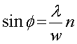
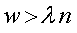
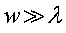

像分布関数 (PSF , Point spread function) について気になる点

という関係式が導出されたのですが，これは，

であることを意味します．
つまり，一次（n=1），二次（n=2）とこれを満たすためには，

である必要があります．
これは，つまり，
使用する光の波長よりもうーんと大きな間隔の二つの開口部
であることですよね？
となると，今回の
レンズの話では，
レンズの中心部分はどのように考えるか？
が気になりますし，
二つの開口部の分解能
では，波長の半分程度，ということが言われていますので，上の式を満たしませんよね．．．．
うーん．．．